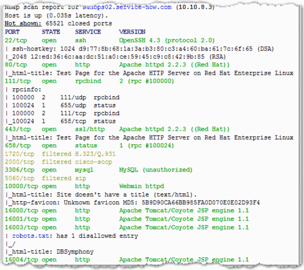
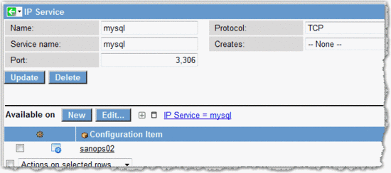
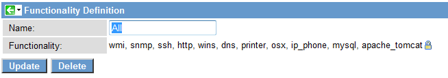
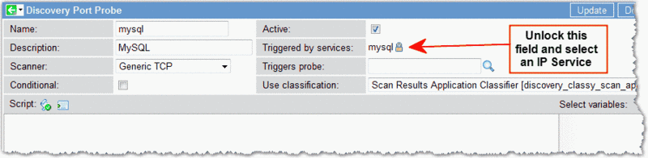
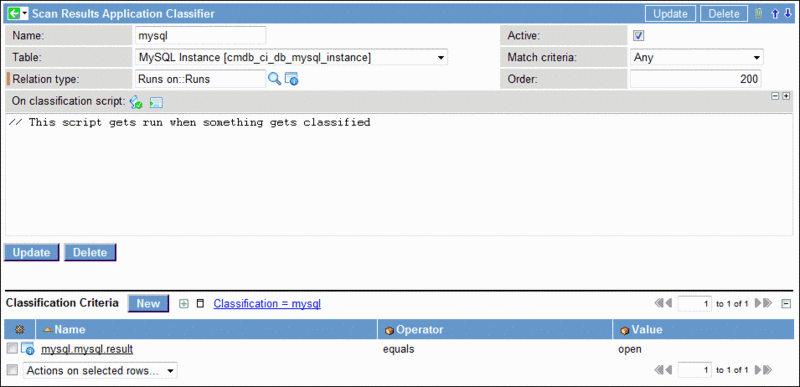

Discovery Classification Parameters
| |
Note: The latest release this documentation applies to is Fuji. For the Geneva release, see Discovery. Documentation for later releases is also on docs.servicenow.com. |
Contents
1 Overview
Each type of Discovery classify probe (Windows, UNIX, SNMP, etc.) returns a unique set of parameters that contains classification information. Any of the supported parameters can be used as configurable criteria for classifying devices that Discovery finds. The tables in this page define the available parameters for each classification.
Discovery also provides a way to classify devices it finds when no credentials are available. Discovery for IP addresses makes certain assumptions about devices and the applications running on those devices from the ports that it finds open. Classification parameters for this type of Discovery are generated differently from scans in which credentials are available. See Forming Parameters for IP Address Scanning for details.
2 Creating Classification Criteria
To add criteria to a Classification record, navigate to Discovery Definition > Classification > <type> and click New in the Classification Criteria related list. Type in the appropriate parameter, select an operator, and enter a value to use for this classification. This form provides the usual operators, including these that may not be familiar:
- regex matches: Use this operator to create a regular expression to conduct a complicated search on a string.
- in IPs: Find a single IP address in an IP address range, network or list. Possible formats are: 10.10.10.0 - 10.10.10.255; 10.10.10.0/24; or 10.10.10.0, 10.10.10.1, 10.10.10.2.
The Discovery classify probe returns values for these parameters from the devices it finds and compares them with the values configured for this classification. The classify sensor then decides if the classification criteria for a device have been met. If the criteria match, the sensor looks at the classification record to determine what probes must be launched.
The following record is for a Windows Server 2003 in the Windows classification. To add an additional classification criteria (parameter) to the list, click New and define the new parameter in the Classification Criterial form (inset). Click Submit to add the parameter to the list.
{kind=link}
2.1 UNIX Parameters
The UNIX parameters define the characteristics of several types of computers, such as Linux, Solaris, and HP-UX, communicating with SSH protocol, version 2.
| Parameter | Description |
| output | The raw output of the classifier probe (uname -a). |
| type | Returns the classification UNIX. |
| IP address | Returns the IP address of the device being discovered. |
| name | Name of the operating system for this UNIX CI. For example, Linux or HP-UX. |
2.2 Windows Parameters
Windows parameters identify Windows computers communicating with the WMI protocol.
| Parameter | Description |
| isNode | Indicates if this instance is a node. |
| type | Returns the classification windows. |
| isVIP | Indicates if this CI is a virtual machine, with a virtual IP address. |
| ip_address | Returns the IP address of the device being discovered. |
| name | Name of the Windows version, such as Windows 2003 Standard. |
2.3 SNMP Parameters
The SNMP parameters can define the characteristics of several types of devices, such as routers, switches, and printers.
| Parameter | Description |
| powering | A value of true indicates that this device is an uninterruptible power supply (UPS). |
| hosting | A value of true indicates that this device can host programs. Hosts are general purpose computers such as servers. |
| netware | A value of true indicates that this device is running the Netware operating system. |
| routing | A value of true indicates that this device has network routing capabilities. |
| ip_address | Returns the IP address through which the device is being discovered. A device can have multiple IP addresses. |
| sysdescr | Required descriptive field on any SNMP device that can contain useful classification data, such as the operating system and its version. |
| vlans | A value of true indicates that this device can host a virtual local area network. |
| hint_router | A value of true indicates that Discovery has determined that this device is a router. This field only applies to devices that can be used as both a router and a switch. |
| block_router_exploration | If this parameter is true, Discovery will not launch exploration probes for routers it detects. This parameter is used for network Discovery only. |
| switching | A value of true indicates that this device has network switching capabilities. |
| mfr_apc | A value of true indicates that this device is an uninterruptible power supply (UPS) manufactured by American Power Conversion (APC). |
| printing | A value of true indicates that this device has printing capabilities. |
| block_switch_exploration | If this parameter is true, Discovery will not launch exploration probes for switches it detects. This parameter is used for network Discovery only. |
2.4 Process Parameters
Process parameters identify processes such as those used by LDAP, Apache Server, and JBoss Server.
| Parameter | Description |
| parameter | The parameters used to run the process. |
| command | The command used to run the process. |
| output | The complete output of the current line of the process probe. |
| type | Indicates the process type (e.g. unix or windows). |
| PID | The process ID generated by the operating system of a device to identify a running process. Generally, this parameter is not a practical classification criteria, because the value does not remain static, except in the case of processes running on an appliance that is never restarted. |
| name | Name of the process being discovered. In some cases, this parameter is not reliable, since several process might be given the same name. In Windows, for example several processes return scvhost.exe for this parameter. |
2.5 Classification for IP Address Scanning
Classification is available for the IP Addresses Discovery type and returns information about CIs (Scan CI) and applications running on CIs (Scan Application). No credentials are required to scan for Windows or UNIX devices with this type of scan, but community string credentials are required for SNMP devices. By determining which ports are open on the devices that it scans, IP address classification can discover such things as the type of device (computer, UPS, etc.), operating system, running applications, and version numbers.
| |
Note: IP address classification attempts to classify devices when no credentials are available; however, Discovery will use credentials when they are available, even when IP address classification is configured. |
To use IP address classification, follow these steps:
- Determine what ports to use for classification. Run a scan program such as Nmap on specific IP addresses to decide which ports reveal the desired information about a device or application.
- The scan can reveal several pieces of data that are useful for configuring classification parameters. An Nmap scan displays port numbers, their state (open or closed), their service names, and any version information it can find. From the port information returned in the example below, we can construct criteria to classify UNIX servers (port 22), MySQL (port 3306), and Apache Tomcat (port 16000).
- 
- Add an IP Service and port probe.
- The out-of-box ServiceNow system supplies probes for some of the most common ports, but additional port probes will be needed for effective IP address scanning.
- a. Navigate to Discovery Definition > IP Services and click New.
- b. Create a new IP Service record using the port number and service from the Nmap scan. In this example, we associate the mysql service with port 3306 and add the CI (sanops02) on which the service runs to the Available on Related List.
- 
- c. To use Basic Discovery, navigate to Discovery Definition > Functionality Definition and select the record for All.
- d. Add the new port probes to the list. This tells Discovery which port probes to run for IP address scans.
- 
- e. Save the record and navigate to Discovery Definition > Port Probes and click New.
- f. Create a port probe using the new IP Service you just defined.
- 
- Create a new classification and add the parameter for IP address scanning.
- In this example, we have created an application classifier that will discover Apache Tomcat, based on the port information we received from the Nmap scan. See the following section for details about forming parameters for IP address scans.
- 
{kind=link}
{kind=link}
{kind=link}
{kind=link}
{kind=link}
2.5.1 Forming Parameters for IP Address Scanning
The syntax for creating parameters is derived from the fields returned by the Shazzam probe when conducting a Discovery for IP addresses. Parameters for CIs and applications are formed in the same way. The Shazzam probe creates an XML file containing the following fields:
- name
- port
- portprobe
- protocol
- result
- service
| |
Note: Optional fields that can be used to form parameters appear as child tags beneath the default fields. Example of these are the sysDescr and banner_text fields. |
Parameters are expressed in the form of <portprobe.service.field>. The value for field can come from any of the fields or child tags in the XML file. For example, the following parameters classify a device as a UNIX server and detect an installation of MySQL:
- ssh.ssh.result
- mysql.mysql.result
These parameters were derived from the values in the following XML file generated by a Shazzam probe conducting an IP Scan. The result field returned a value of open for ports 22 and 3306 on the target device. The service field indicates the services that normally communicate over those ports.
{kind=link}
The sysDescr field can provide additional information about devices, depending upon the manufacturer. This XML file from the Shazzam probe reveals the following about port 161 on the device at IP 10.10.11.149:
{kind=link}
In the classification criteria, we can construct the following parameter with sysDescr that returns an Apple AirPort wireless router.
- snmp.snmp.sysDescr > contains > Apple AirPort
{kind=link}